Two-dimensional (2D) crystals are attractive for flexible electronics, membranes and composites, where in-plane stiffness decides whether a sheet survives handling and strain. Thousands of hypothetical 2D crystals can be generated, but measuring each is impossible and computing its stiffness from first principles is expensive: every material needs a relaxed reference cell plus several strained density-functional-theory (DFT) calculations. Machine-learning (ML) surrogates trained on existing DFT results promise a cheaper estimate and have been proposed for 2D materials [1], [2].
How reliable are such surrogates on new materials? The common practice is a random train/test split. 2D databases contain many polymorphs and prototype relatives (MoS2, MoSe2 and WS2 share one structure type), so a random split places close relatives of almost every test material in the training set, and the reported error partly measures recognition of a familiar structure. That random cross-validation overestimates performance, and that group- or cluster-wise hold-out is harder, is well established for materials data [3], [4], [5], [6], [7]; we do not claim it as new. The open questions for 2D layered materials are which overlap matters—chemistry or structure prototype—whether the effect is specific to one property or database, whether a better model class or tuning removes it, and whether it can be forecast cheaply.
We therefore treat evaluation as the object of study and use deliberately plain, DFT-free descriptors and standard regressors. Our contributions, in decreasing order of evidential strength, are:
We do not claim a new model or state-of-the-art accuracy, and we state what is not done: no bilayer stiffness model or DFT-validated bilayer stiffness, no mechanism for the family effect, no prospective test on an independent dataset, and no feature-level attribution (SHAP, permutation importance).
For small in-plane strain a sheet obeys a linear stress–strain law in Voigt notation with a 3×3 stiffness matrix over (xx, yy, xy). Because a sheet has no well-defined thickness, the stress is integrated over the cell height Lz (vacuum included) and the constants are quoted in N/m (force per unit edge length), not GPa:
The in-plane Young’s modulus and Poisson ratio follow from the xx, yy block:
N/m scales with the number of layers whereas GPa does not, so a monolayer–bilayer comparison must state whether a value is per layer or for the whole slab. All stiffness values here are single-layer or explicitly total for the slab.
Experiment. Suspended sheets are measured by nanoindentation or from the nonlinear response of drum resonators [8]. Reported values carry large spreads: a review table lists graphene at 1000 ± 100 GPa and monolayer MoS2 at 270 ± 100 GPa [9]. Samples must first be made, which is impractical for hypothetical materials.
Classical molecular dynamics. Atomistic nanoindentation or tensile simulations with empirical potentials are fast [10], [11] but the potential must be parameterised per chemistry, so results transfer poorly.
DFT finite-strain method. The reference route, used to build C2DB, relaxes the sheet, applies ±1 % strains in xx, yy and xy, relaxes the ions and reads the stress. With strain amplitude δ and κ = 16.0218 N m−1 per eV Å−2,
This needs one reference relaxation and six strained relaxations per material: accurate and general, but slow.
Table I summarises the seven papers on our reading list (a reading list, not a systematic review).
| Study | Data / model | Validation split |
|---|---|---|
| Venturi et al. [1] | C2DB (≈3,500); 100-model CGCNN ensemble; formation energy, gap, stiffness constants | Random 70 % per model; metrics over all of C2DB, training points included |
| Fronzi et al. [2] | Bilayers; 282 interlayer-energy, 226 C33 labels; Bayesian NN | K-means cluster-stratified 75/25 (in-domain) |
| Malakar et al. [11] | 1,440 MD runs, four TMDs; FFNN, LSTM | Ratio not stated; test from the same four materials |
| Maurizi et al. [12] | FE composites and lattices; GNN | Random 90/10 |
| Elder; Davidovikj; Zhang [10], [8], [9] | MD / experiment / review (no ML) | — |
All ML studies in Table I use random or in-domain test sets; none evaluates on held-out chemical systems or structure families. Closest to our bilayer target, Fronzi et al. predict interlayer energy and the out-of-plane constant C33 (test R2≈0.80) [2]. In the wider materials-informatics literature, leave-one-cluster-out evaluation [3], redundancy control [5], [6], standardised chemistry- and structure-based hold-outs [7] and benchmark suites [13] document the same optimism, and a recent BiDB study already splits at the monolayer level [14]. Our added value is narrower: a quantified comparison, for 2D mechanical and interlayer targets, of which grouping removes the optimism, with interval estimates and tests of model class, tuning and a cheap forecast.
The training source is C2DB [15], [16] (GPAW [17], PBE [18]); the external source is the 2D subset of JARVIS-DFT [19], [20] (VASP [21], OptB88vdW [22]); bilayer labels come from BiDB [23] (PBE-D3). From each stiffness file we form the symmetrised 3×3 (xx, yy, xy) matrix C and keep a material only if it is finite, positive definite and nearly symmetric:
A sheet that does not resist stretching in every direction is mechanically unstable, and large asymmetry flags a noisy calculation. Stability is derived from the tensor, never from a database label. For JARVIS only the xx, yy block is used (its shear entries did not reproduce known MoS2 values) and corrupt tensors (NaN or denormal numbers) are dropped. For the Poisson target rows with |ν| > 1 are removed.
BiDB provides 10,192 homobilayers of 992 monolayers (109 structure families). We use the rigid vertical-scan binding energy (meV/Å2 per interface, positive = bound) and the interlayer gap (Å); definitions were established from the files and published summaries. A label is valid if it is positive and below the upper tail Q3 + 3 IQR of its log10 distribution. A uid map links 982 of 992 monolayers one-to-one to C2DB (verified at formula level only).
The chemical system is the sorted element set (MoS2 → Mo–S). The structure family joins the anonymised formula (element identities hidden, so MoS2 and WSe2 both become AB2) with the layer-group number Nlg:
The clean stiffness set has 3,806 chemical systems (2,572 single-member) and 676 families (largest 432 rows). Polymorphs are kept as separate rows, which is why family grouping matters. For BiDB the groups are the monolayer and the family (anonymous stoichiometry plus monolayer layer group).
Each C2DB material is described by 141 numbers: 132 composition descriptors (Magpie preset [24], matminer [25], pymatgen [26]) and 9 structural ones (lattice lengths a, b, angle γ, area per atom, atom count, slab thickness, nlayers, space-group number, number of elements). In matminer, Magpie summarises 22 elemental properties with six composition-weighted statistics each (22×6 = 132); for a property p and atomic fractions xi,
plus minimum, maximum, range and mode. Because Magpie depends only on the reduced formula, polymorphs share identical composition descriptors; geometry separates them. In the monolayer data nlayers is constant. DFT outputs (energy above hull, formation energy, band gap, stability labels) are excluded for the stiffness task: they need a calculation, so a model using them could not score a genuinely new material. For BiDB the monolayer feature sets are mono_basic (140: Magpie, geometry, monolayer layer group), mono_stiffness (147: adds C2DB monolayer stiffness through the uid map) and, as an extension, mono_stiffness_stacking (158: adds stacking descriptors from the uid). Because the first two describe only the monolayer, every stacking of a monolayer receives the same prediction.
Stiffness is right-skewed (median 47.9, mean 66.6, maximum 713.6 N/m), so models are fitted to ln Y2D and mapped back; the Poisson ratio is not transformed. Three regressors from scikit-learn [27] and LightGBM [28] use fixed settings: ridge regression [29] with internal-CV penalty,
a random forest [30] (300 trees, one third of features per split); and LightGBM (500 trees, learning rate 0.05, 31 leaves, 80 % row and 50 % column subsampling), an additive model
To test whether a structure-aware model narrows the gap we trained a CGCNN-type network [31] in PyTorch on the same rows and the identical folds (seed 42): three gated graph-convolution layers,
with zij = vi ⊕ vj ⊕ uij, 64 hidden units, mean pooling and a two-layer read-out. Node inputs are ten standardised elemental properties; edges join all neighbours within 6 Å (periodic in-plane) with 40 Gaussian distance functions. Training used L1 loss, Adam, up to 200 epochs, and early stopping on a validation subset drawn with the same grouping rule as the outer split, so early stopping never sees test-family information. The network was trained with three seeds (42–44) and also evaluated as a three-seed prediction ensemble; no hyper-parameter search. Separately, LightGBM was tuned by random search (16 configurations plus the default for Y2D; 12 plus the default for the BiDB binding energy) with three-fold inner cross-validation that matches the outer grouping, then refitted and scored on the outer test fold.
Five-fold cross-validation is run under four schemes: random (comparison only), cluster (K-means, 20 clusters on standardised Magpie features, stratified so every cluster appears in train and test, after Fronzi et al. [2]), chemical-system and structure-family (monolayer and family for BiDB). Grouped schemes use stratified group K-fold on ten target-quantile bins, which balances the target distribution while keeping each group in one fold. Overlap is measured explicitly: for a key k, the fraction of test rows whose key also occurs in training,
with test fold $\mathcal T$ and training rows $\mathcal R$. Metrics are the MAE, the coefficient of determination (also in log space) and the ratio of grouped to random error:
Seeds 42–46 are used for the stiffness case study and 42–44 for the panel. Seed standard deviations hold the dataset fixed and therefore understate uncertainty, so all headline intervals are cluster bootstraps: the clustering unit (structure family; monolayer for BiDB) is resampled with replacement (2,000 resamples), pooled out-of-fold metrics are recomputed, and 2.5th–97.5th percentiles are reported; paired differences use the same resample. Null baselines (global, chemical-system and family means) show how much skill group identity alone provides.
To test generality we built a panel of C2DB numeric fields by fixed rules: at least 3,000 labels; not an identifier, symmetry integer or purely geometric quantity; not degenerate (<50 % of values at the mode); one representative per property family (PBE and HSE gaps are distinct). Twelve targets qualify: formation energy (hform), energy above hull (ehull), PBE and HSE gaps, vacuum level (evac), Fermi level (efermi), valence-band maximum (vbm), electronic polarisability (alphax_el), plasma frequency (plasmafrequency_x), conduction-band effective mass (emass_cbm), Y2D and ν. Targets are log-transformed if all values are positive with max/min > 100. The same 141 features and default LightGBM are used for all. With skill measured against the mean predictor (MAE0), we define skill and skill retention,
and a label-only diagnostic computed with no features: the skill of a family-mean predictor under random splits,
The pre-specified hypotheses were: H1, every ratio >1 (with ≥1.05 reported) and every Rfam < 1; H2 (primary), Spearman ρ(Dfam, Rfam) ≤ −0.6 with a 95 % interval below 0; H3, a leave-one-property-out linear fit beats the mean (error ratio <0.8); H4, the chemical-system analogue; H5, Dfam associates with Rfam at least as strongly as the intra-class correlation or simple covariates. H2 was to be called not predictive if ρ > −0.3 or the error ratio ≥1. These hypotheses and the graph-network and tuning designs were written in dated design files before the corresponding models were fitted and their thresholds were not changed afterwards; the files were committed together with the results, so this order is recorded by the authors and cannot be verified from version control.
Prospective replication on JARVIS-DFT 2D. To test whether the effect belongs to C2DB or to the splitting problem, the design, target-selection rules and five predictions (P1–P5) were written before any JARVIS panel model was fitted. All 1,103 JARVIS monolayers are used with the same 141 features and protocol (three seeds). JARVIS has no layer group, so the family is the anonymous formula plus the space-group number, a documented deviation from C2DB’s definition. Ten properties met the same rules (formation energy, OptB88vdW gap, εx, effective mass, spillage, exfoliation energy, n-Seebeck, n-power factor, n-conductivity, n-κ). The predictions were: P1, ratio >1.05 for ≥80 % of targets with the interval above 1 for ≥70 %; P2, chemical-system ratio <1.15 for ≥70 %; P3, H2 fails to replicate (|ρ| < 0.5); P4, the pooled 22-property test also fails; P5, formation energy and the band gap show the penalty in both databases. If P1 failed, the claim was to be softened from “general” to “present in the properties tested”.
The stiffness model is trained on all clean C2DB rows and applied to 186 clean JARVIS rows with no JARVIS label in training. Rows are matched to C2DB by formula, atom count and lattice constants within 3 % (a heuristic), giving 106 matched rows and 55 rows whose chemical system is absent from C2DB (unseen chemistry). Intervals are 95 % bootstrap intervals [32] over JARVIS rows; ranking is measured by the Spearman coefficient [33],
(formula valid without ties). The agreement of the two databases on the 106 shared materials sets a noise floor for cross-database comparison.
MACE-MP-0 (“medium”), MACE-MPA-0 (“medium-mpa-0”) [34] and CHGNet 0.3.0 [35] are driven through ASE [36] to reproduce Eq. (3): ions and in-plane cell relaxed (Fmax = 0.005 eV/Å), then ±1 % strains with ion relaxation. Each run first checks that the analytic stress equals a finite-difference energy derivative (ratio 0.97–1.03 required). Cells are fully periodic with ≥15 Å vacuum (a non-periodic vacuum axis gave a wrong stress in an early test). The benchmark has 150 C2DB monolayers (one member from each of 150 randomly drawn families of a 3,380-monolayer pool: non-magnetic, Ehull ≤ 0.1 eV/atom, ≤12 atoms) and 184 JARVIS rows (≤24 atoms). The stiffness gate was fixed beforehand:
A fixed-cell diagnostic reruns MACE-MPA-0 on the unchanged C2DB cell to test whether geometry explains its error. For interlayer binding, MACE-MPA-0 with D3(BJ) dispersion [37] scans the vertical gap of each rigid BiDB bilayer (30 non-magnetic monolayers, 307 bilayers) like-for-like with the DFT labels, with
The pre-specified BiDB criteria were: D1 (gap) median |Δd| ≤ 0.10 Å and 90th percentile ≤ 0.30 Å; E1 Spearman ≥ 0.80; E2 median ratio in [0.8, 1.25], ≥70 % within ±30 % and ≥90 % within a factor 2; E3 failures ≤ 10 %; S1 mean within-monolayer Spearman ≥ 0.60 with the BiDB-best stacking in the top two for ≥60 % of monolayers. Finally, 60 homobilayers (best and worst reference stacking of each of the 30 monolayers) were strained like monolayers, and the descriptive ratio
was recorded (≈2 for additive layers). No gate was attached to it.
Of 16,905 C2DB entries, 8,462 have a stiffness file; 988 fail positive-definiteness and a further 216 the asymmetry test, leaving 7,258 (14.2 % of labelled rows removed; Fig. 2). For JARVIS, 18 of 229 tensors are corrupt and 25 more are unstable in the xx, yy block, leaving 186. For BiDB, 9,993 binding-energy and 10,189 gap labels are valid (Table II). The JARVIS panel uses all 1,103 JARVIS monolayers (no stiffness required; 603–1,103 labels per property).
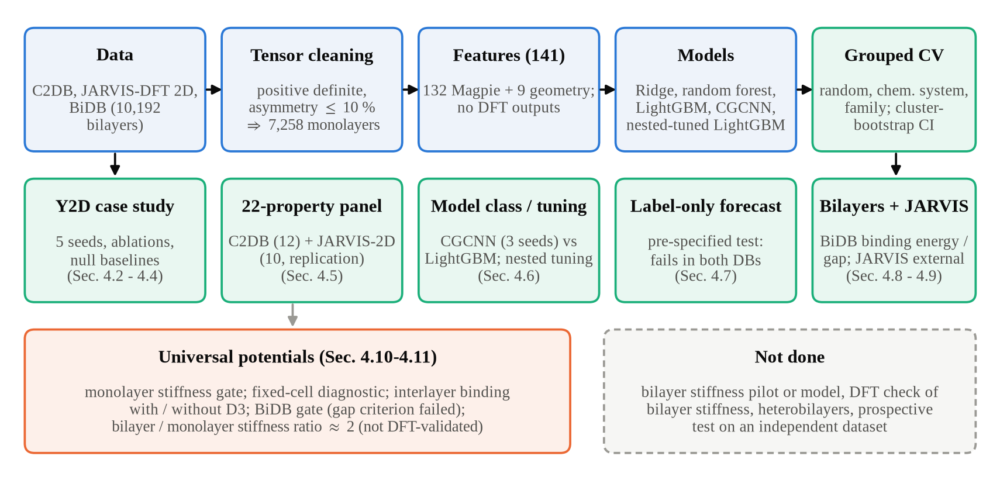
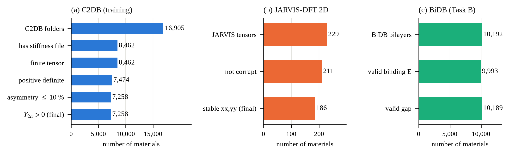
| Item | C2DB | JARVIS | BiDB |
|---|---|---|---|
| Rows used | 7,258 | 186 (1,103 panel) | 9,993 / 10,189 |
| Monolayers / families | 7,258 / 676 | — | 992 / 109 |
| Chemical systems | 3,806 | — | — |
| Median label | 47.9 N/m | 71.1 N/m | — |
| Role | train / CV | external | Task B, checks |
The mean predictor has MAE 42.4 N/m. Ridge halves this (22.5), trees reduce it by about a third again (14.7 for the forest) and LightGBM is best in every scheme, but only about 1 N/m better than the forest (Table III): the non-linear dependence matters more than the choice between tree ensembles. The ridge family-split R2 of −11.0 is a back-transformation artefact of one fold (its log-space R2 is 0.36). The Poisson ratio is predicted poorly (LightGBM R2 = 0.39 random, 0.14 family).
| Model | Random | Cluster | Chem. sys. | Family |
|---|---|---|---|---|
| Ridge | 22.5 / 0.69 | 22.6 / 0.69 | 22.8 / 0.67 | 31.1 / −11.0 |
| Random forest | 14.7 / 0.85 | 14.7 / 0.84 | 14.8 / 0.83 | 20.9 / 0.67 |
| LightGBM | 13.7 / 0.87 | 14.0 / 0.87 | 13.9 / 0.86 | 19.8 / 0.70 |
| Poisson, LightGBM | 0.111 / 0.39 | 0.111 / 0.39 | 0.109 / 0.42 | 0.140 / 0.14 |
Overlap. Fig. 3 shows why the schemes differ. Under random splitting 96 % of test rows have their structure family in training and 61 % their chemical system. The chemical-system split drives chemical overlap to zero but leaves 96 % family overlap; only the family split removes it (keeping 59 % chemical overlap).
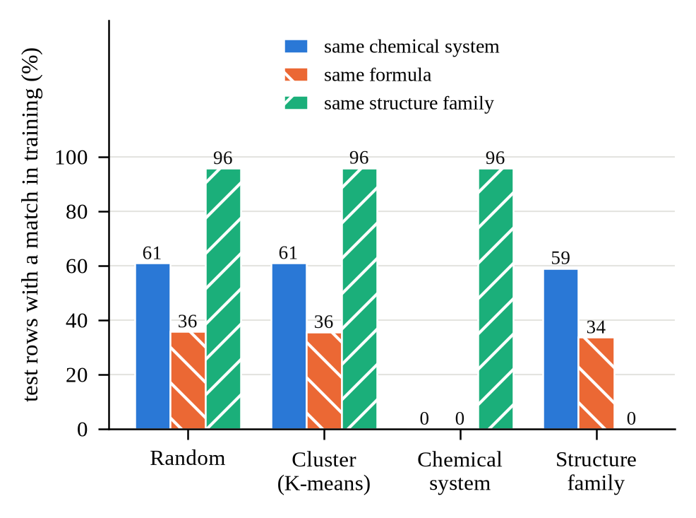
Accuracy. Over five seeds LightGBM attains MAE 13.8 ± 0.1 (random), 13.9 ± 0.1 (chemical system) and 19.9 ± 0.2 N/m (family) (Fig. 4, Table IV); log-space R2 falls from 0.80 to 0.68. The family/random ratio is 1.44 ± 0.02 over seeds, with a seed-42 cluster-bootstrap interval of [1.30, 1.62], and 1.43 for the random forest; the chemical-system ratio is 1.01 [0.99, 1.04]. The cluster scheme gives 1.02 (seed 42), as expected of an in-domain split. Pooled out-of-fold R2 drops from 0.874 [0.828, 0.905] to 0.740 [0.602, 0.828].
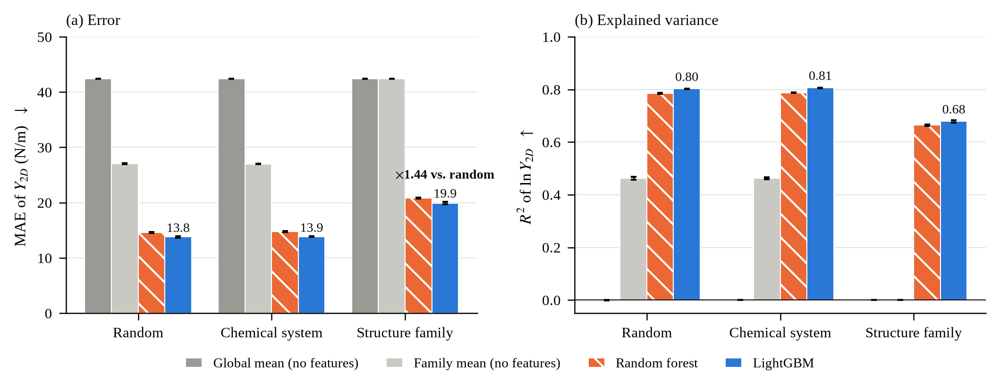
| Model | Random | Chem. | Family | Fam./Rand. |
|---|---|---|---|---|
| Global mean | 42.4 | 42.4 | 42.4 | 1.00 |
| Family mean | 27.0 | 27.0 | 42.4 | 1.57 |
| Chem.-sys. mean | 34.5 | 42.4 | 34.3 | 0.99 |
| Random forest | 14.6 | 14.7 | 20.8 | 1.43 |
| LightGBM | 13.8 | 13.9 | 19.9 | 1.44 |
What this shows. The random-split score is optimistic for unfamiliar structure types by about 44 % in error, while the model stays well above the no-feature baselines (19.9 vs 42.4 N/m). The chemical-system split, which one might expect to be harder, is not: removing the 61 % chemical overlap changes nothing because 96 % structural overlap remains. Is the gap just missing features? (i) Giving the model layer group and anonymous formula directly leaves the ratio at 1.44–1.47 (Section 4.4). (ii) The family-mean baseline falls from R2(ln) = 0.46 to 0.00 once the family is unseen, i.e. identity alone explains the random-split gain but nothing beyond it. (iii) Composition-only LightGBM still reaches R2(ln) = 0.50 on unseen families, so transferable chemical signal exists; the remaining gap is the cost of extrapolating to new prototypes.
Fig. 5 removes groups of descriptors. Composition only (19.2/25.5 N/m, random/family) and structure only (19.8/26.6) perform almost identically, and combining them lowers the error by about 28 % (13.8/19.9): the two views are complementary though partly redundant. The space-group number alone is nearly uninformative (38.0/44.3, worse than the 42.4 mean predictor under family CV), and removing it from the full model costs only 0.3 N/m, so the structural signal is carried by geometry. One-hot layer-group and anonymous-formula columns alone recover the family-mean baseline under random CV (R2(ln) 0.455 vs 0.463) and nothing under family CV (0.06); added to the full set they change the MAE by −0.2 to +0.1 N/m, within one to three seed standard deviations. Ablation removes groups of columns with one model, and shows predictive contribution, not physical causation; no SHAP or permutation analysis was run.
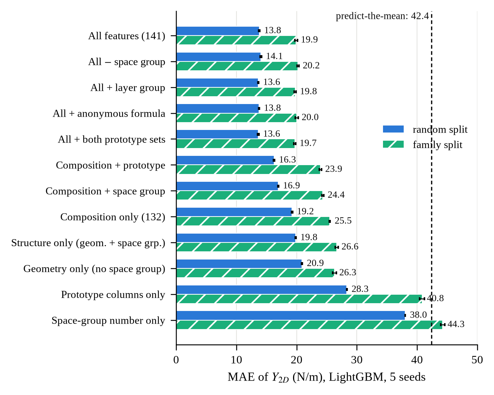
C2DB. Table V and Fig. 6 give the panel. H1 holds: all twelve MAE ratios exceed 1.05 (range 1.12–1.92), every interval lies above 1, and every Rfam is below 1. For every property the family axis removes more skill than the chemical-system axis. Chemistry is not irrelevant for electronic properties—chemical-system ratios are 1.03–1.10 for hform, ehull, both gaps, evac, efermi and vbm—but they are small next to 1.4–1.9 for the family axis and are about 1.00 for Y2D, polarisability, plasma frequency, effective mass and ν. Stiffness sits mid-panel; evac is the most affected, and the Poisson ratio keeps the least skill (Rfam 0.34). Formation energy keeps the most (0.90).
| Property | n | Families | MAE ratio, family / random | Skill retained Rfam | Ratio, chem. sys. | Dfam |
|---|---|---|---|---|---|---|
| hform | 16,905 | 1,198 | 1.49 [1.43, 1.56] | 0.90 [0.89, 0.91] | 1.07 | 0.13 |
| ehull | 16,905 | 1,198 | 1.48 [1.41, 1.55] | 0.63 [0.58, 0.68] | 1.03 | 0.18 |
| gap (PBE) | 8,699 | 753 | 1.53 [1.41, 1.64] | 0.79 [0.75, 0.83] | 1.07 | 0.29 |
| gap (HSE) | 3,363 | 414 | 1.42 [1.34, 1.51] | 0.72 [0.67, 0.78] | 1.06 | 0.21 |
| evac | 8,699 | 753 | 1.92 [1.77, 2.08] | 0.78 [0.73, 0.82] | 1.03 | 0.47 |
| efermi | 8,699 | 753 | 1.46 [1.39, 1.54] | 0.76 [0.73, 0.80] | 1.08 | 0.19 |
| vbm | 4,567 | 566 | 1.53 [1.42, 1.67] | 0.75 [0.69, 0.79] | 1.10 | 0.19 |
| alphax_el | 5,352 | 410 | 1.12 [1.09, 1.16] | 0.83 [0.74, 0.90] | 0.99 | 0.09 |
| plasmafrequency_x | 3,931 | 228 | 1.55 [1.43, 1.69] | 0.61 [0.51, 0.70] | 0.99 | 0.19 |
| emass_cbm | 3,532 | 433 | 1.23 [1.16, 1.31] | 0.68 [0.57, 0.78] | 1.00 | 0.22 |
| Y2D | 7,258 | 676 | 1.43 [1.29, 1.62] | 0.81 [0.71, 0.88] | 1.00 | 0.39 |
| Poisson ν | 7,229 | 675 | 1.28 [1.24, 1.32] | 0.34 [0.21, 0.42] | 0.99 | 0.15 |
JARVIS-DFT 2D replication. Table VI lists the ten JARVIS properties. Every interval lies above 1 (ratios 1.03–1.42), so the sign of the effect replicates for all ten. But only seven of ten exceed 1.05; the three that do not are the transport properties n-power factor (1.04), n-conductivity (1.03) and n-κ (1.03), which retain 94–96 % of their skill and are poorly predicted under any split. Prediction P1 therefore failed (70 % against the required 80 %; all ten intervals above 1 meets its second part). By the pre-specified decision rule the claim is softened: the penalty is present in every one of the 22 properties tested and above the materiality threshold in 19 of 22, and it is strongest for structure-determined properties. Chemistry matters more in JARVIS than in C2DB: chemical-system ratios reach 1.25 (formation energy), 1.20 (gap) and 1.21 (εx), although P2 held at its limit (7 of 10 below 1.15). We did not test why; JARVIS is smaller (1,103 versus 16,905 materials) and its family is defined by the space group, not the layer group. Effective mass is the one property classed as chemistry-driven, and its random-split skill is negative (heavy-tailed target, kurtosis 549), so its retention ratio is not interpretable. P5 held: formation energy shows the penalty in both databases (1.49 and 1.42), as does the band gap (1.53 PBE, 1.35 OptB88vdW).
| Property | n | Families | MAE ratio, family / random | Skill retained Rfam | Ratio, chem. sys. | Dfam | Dominant axis |
|---|---|---|---|---|---|---|---|
| formation energy | 1,103 | 302 | 1.42 [1.30, 1.54] | 0.87 [0.83, 0.91] | 1.25 | 0.19 | family |
| gap (OptB88vdW) | 1,103 | 302 | 1.35 [1.25, 1.45] | 0.69 [0.63, 0.75] | 1.20 | 0.15 | family |
| εx (epsx) | 887 | 261 | 1.40 [1.23, 1.61] | 0.68 [0.58, 0.80] | 1.21 | 0.16 | family |
| avg_elec_mass | 678 | 212 | 1.23 [1.11, 1.39] | — | 1.12 | 0.23 | chemistry |
| n-Seebeck | 806 | 252 | 1.22 [1.14, 1.28] | 0.31 [0.12, 0.44] | 1.09 | 0.05 | family |
| n-powerfact | 802 | 250 | 1.04 [1.01, 1.29] | 0.94 [0.84, 0.99] | 1.02 | -0.05 | similar |
| ncond | 802 | 250 | 1.03 [1.01, 1.39] | 0.96 [0.89, 1.00] | 1.02 | -0.03 | similar |
| nkappa | 802 | 250 | 1.03 [1.01, 1.50] | 0.96 [0.87, 1.02] | 1.01 | -0.03 | similar |
| exfoliation energy | 748 | 245 | 1.13 [1.06, 1.21] | 0.84 [0.75, 0.92] | 1.08 | 0.18 | family |
| spillage | 603 | 202 | 1.18 [1.05, 1.39] | — | 1.03 | 0.02 | family |
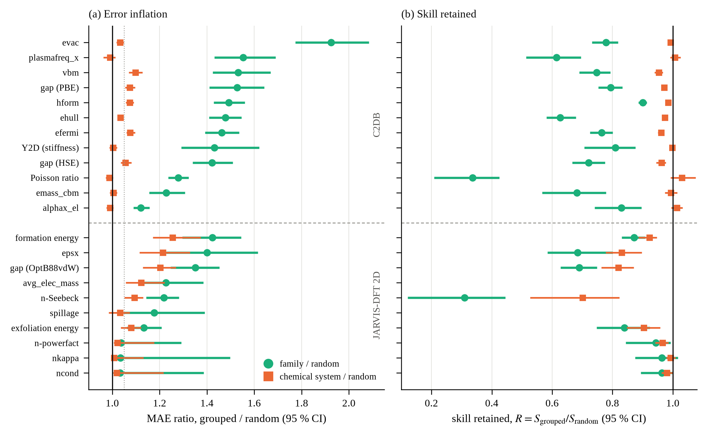
On identical folds the seed-42 CGCNN gives MAE 15.3, 15.9 and 21.1 N/m under random, chemical-system and family splits, against 13.7, 13.9 and 19.8 for LightGBM (Fig. 7). Over three seeds its family/random ratio is 1.38, 1.43 and 1.34 (s.d. 0.03), within the interval of LightGBM’s 1.44 [1.29, 1.62]. The three-seed prediction ensemble reaches MAE 13.70, 14.39 and 19.72 N/m and a ratio of 1.44 [1.33, 1.55]; the difference to LightGBM is −0.003 [−0.10, +0.10] and the paired family-split MAE difference LightGBM − ensemble is +0.09 [−1.60, +1.84] N/m. The seed-42 CGCNN was worse than LightGBM on random and chemical-system splits (paired differences −1.57 and −1.94 N/m, intervals excluding zero) but not on families; the three-seed ensemble is statistically indistinguishable from LightGBM on random and family splits and does not narrow the gap (A1 and A2 held, A3 did not). Early stopping with grouped validation stopped after 46 epochs on average for family folds versus 122 for random folds. The network is untuned, uses hand-chosen node features and 7,258 training graphs, so a stronger graph model is not excluded.
Nested tuning lowered the Y2D random-split MAE from 13.74 to 12.86 N/m (gain 0.87 [0.55, 1.26]) but left the family-split MAE unchanged, 19.82 to 19.83 (gain −0.01 [−0.28, +0.25]); the ratio rose to 1.54 [1.37, 1.77]. Tuning improved only the optimistic number. For BiDB binding energy (default plus 12 configurations; resampling unit = family, the conservative choice) tuned MAE is 2.33, 8.83 and 13.75 meV/Å2 against 2.43, 9.37 and 13.80 untuned (random, monolayer-grouped, family-grouped); no gain has an interval excluding zero (+0.09 [−0.01, 0.24], +0.53 [−0.02, 1.15], +0.05 [−0.41, 0.52]), and the ratios monolayer/random 3.78 [2.57, 5.66] and family/random 5.89 [3.99, 8.73] are the same as untuned (3.86 and 5.68).
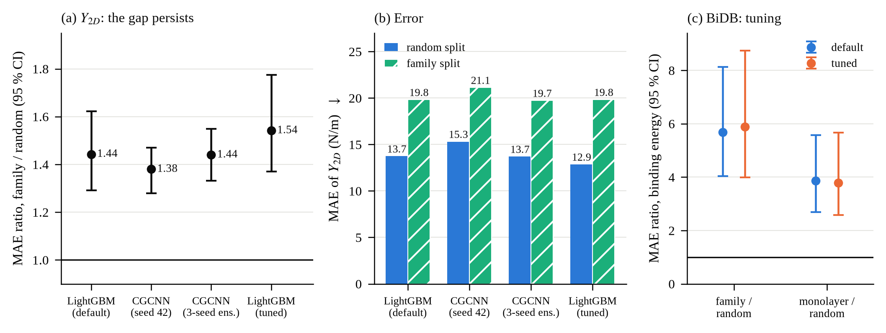
If the loss of skill could be predicted from labels alone, it would be a cheap pre-modelling diagnostic. It cannot (Table VII). In C2DB, H2 failed its own falsification rule (ρ = 0.00, interval −0.60 to 0.81; leave-one-property-out error ratio 1.01); the chemical-system analogue (ρ = −0.53 [−0.92, +0.16], error ratio 0.88) points in the hypothesised direction but meets neither criterion; ICC, sample size, family count and kurtosis also do not explain Rfam (|ρ| ≤ 0.44, all intervals include 0). The prospective replication predicted the same failure and found it: ρ = 0.01 [−0.58, 0.87] in JARVIS (error ratio 1.27) and −0.04 [−0.51, 0.51] pooled over 22 properties (P3 and P4 passed). With ten to twenty-two properties the test has low power, so the safe reading is “no evidence of forecasting”, not “impossible”.
One exploratory association was not the pre-specified test: Dfam correlates positively with the family/random MAE ratio (pooled ρ = 0.67 [0.28, 0.89]; JARVIS 0.75; C2DB 0.37 [−0.36, 0.84]), i.e. properties that a family label already explains well lose more relative accuracy on unseen families. This is partly expected from the definitions (both depend on between-family variance) and is not the forecast of skill retention that was hypothesised.
| Test | Observed | Needed |
|---|---|---|
| C2DB H1: ratios >1.05; all R<1 | 12/12; yes | descriptive |
| C2DB H2 ρ(Dfam, Rfam) | 0.00 [−0.60, 0.81] | ≤ −0.6, CI <0 |
| C2DB H3 LOPO error ratio | 1.01 | < 0.8 |
| C2DB H4 chem. system ρ | −0.53 [−0.92, 0.16] | ≤ −0.6 |
| JARVIS P1 ratio >1.05 / CI >1 | 7/10 (70 %) / 10/10 | ≥ 80 % / ≥ 70 % |
| JARVIS P2 chem. ratio <1.15 | 7/10 | ≥ 70 % |
| JARVIS P3 ρ(Dfam, Rfam) | 0.01 [−0.58, 0.87] | not ≤ −0.6 |
| Pooled P4 ρ (22 properties) | −0.04 [−0.51, 0.51] | not ≤ −0.6 |
| P5 hform and gap penalty in both DBs | 1.49/1.42; 1.53/1.35 | both >1.05 |
In BiDB each monolayer appears about ten times (one per stacking) with identical monolayer features, and 99.3 % of random-split test bilayers have their monolayer in training. The share of ln-variance between monolayers is 0.955 for binding energy (0.771 for the gap), which caps any monolayer-only model; the random-split ln R2 (0.940) sits at that ceiling, i.e. the model has learned to recognise monolayers. Fig. 8 and Table VIII give the consequence. LightGBM on mono_stiffness has binding-energy MAE 2.43 (random), 9.37 (monolayer-grouped) and 13.80 meV/Å2 (family-grouped) at seed 42; the ratios are 3.86 [3.03, 4.80] and 5.68 [4.02, 7.92], and the family-grouped pooled R2 is 0.15 [−0.09, 0.33] (the mean predictor has MAE 18.5). Across five seeds the grouped MAEs are 9.07 and 13.59, and one family fold (MAE 22.1 against 21.7 for the mean predictor) is worse than the mean. The interlayer gap is only moderately predictable from the monolayer (ratios 1.09 [1.04, 1.15] and 1.29 [1.16, 1.52]).
Two further results qualify what the monolayer information contains. C2DB monolayer stiffness added no detectable benefit (binding energy, five seeds, mono_basic vs mono_stiffness: 2.44 vs 2.42, 9.06 vs 9.07, 13.54 vs 13.59 meV/Å2). Stacking descriptors (seed 42 only) helped the gap substantially (LightGBM MAE 0.25→0.15 Å random, 0.27→0.20 monolayer-grouped, 0.32→0.27 family-grouped) but not binding energy for new families (13.85→13.92). Extreme z-scan values (up to 7,970 meV/Å2) make the validity filter necessary; the gap results depend on the outlier rule.
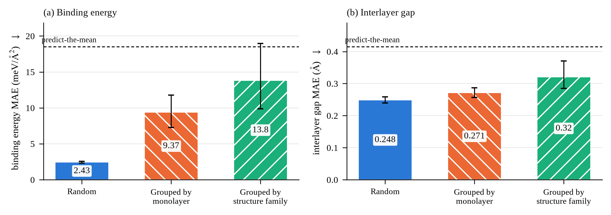
| Label | Scheme | MAE, 5 seeds | MAE, seed 42 [95 % CI] | Ratio to random [95 % CI] | MAE of mean predictor |
|---|---|---|---|---|---|
| Binding energy (meV/Å2) | Random | 2.42 | 2.43 [2.30, 2.58] | 1 | 18.5 |
| Monolayer | 9.07 | 9.37 [7.27, 11.76] | 3.86 [3.03, 4.80] | 18.5 | |
| Family | 13.59 | 13.80 [9.86, 18.96] | 5.68 [4.02, 7.92] | 18.5 | |
| Interlayer gap (Å) | Random | 0.248 | 0.248 [0.239, 0.259] | 1 | 0.415 |
| Monolayer | 0.278 | 0.271 [0.257, 0.287] | 1.09 [1.04, 1.15] | 0.415 | |
| Family | 0.316 | 0.320 [0.285, 0.370] | 1.29 [1.16, 1.52] | 0.415 |
Fig. 9 and Table IX report the external test. On all 186 JARVIS rows LightGBM reaches MAE 19.0 [14.4, 24.5] N/m with Spearman 0.82 [0.72, 0.90]. On the 106 matched rows the error is 10.2 [7.9, 12.5] with Spearman 0.93—optimistic, since the material is in training. On the 55 unseen-chemistry rows it is 29.1 [20.5, 39.6] with Spearman 0.73 [0.51, 0.89] and R2(ln) 0.45 [−0.14, 0.75]; the lower end shows the sample cannot rule out performance no better than the mean. The “all” row mixes leaky and non-leaky rows and is not a generalisation figure. Composition-only features collapse on unseen chemistry (R2(ln) 0.06) while structure-only features hold (0.41), but the intervals overlap.
Interpretation. C2DB and JARVIS differ in code, functional and workflow, so even a perfect copy of C2DB would miss JARVIS by about 8.6 N/m. On matched rows the model is close to that floor (10.2); on unseen chemistry its error is about 3.4 times the floor, so most of it is genuine model error, though the floor was measured on matched (possibly easier) materials. One JARVIS reference (HgI2, 386 N/m) looks implausible. The JARVIS unit is inferred (median ratio 1.04 to C2DB). The model is useful for ranking candidates, not for quoting absolute stiffness on new chemistry.
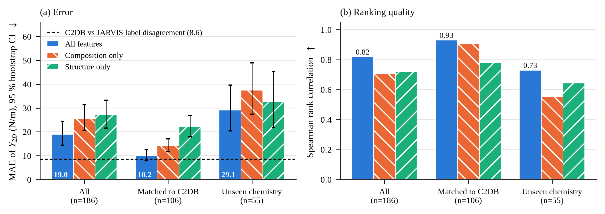
| Subset | n | MAE | R2(ln) | Spearman |
|---|---|---|---|---|
| All | 186 | 19.0 | 0.55 | 0.82 |
| Matched to C2DB | 106 | 10.2 | 0.81 | 0.93 |
| Unseen chemistry | 55 | 29.1 | 0.45 | 0.73 |
| Label agreement | 106 | 8.6 | 0.75 | 0.92 |
Table X and Fig. 10 apply the gate of Eq. (15). MACE-MP-0 and CHGNet fail everywhere and are systematically too soft (pooled slope through the origin 0.62 and 0.48; median predicted/DFT ratio 0.72 and 0.53). MACE-MPA-0 passes only on C2DB (150 monolayers: Spearman 0.94, MAE 9.9 N/m); on JARVIS it has Spearman 0.81 but MAE 77.5, dominated by a few ML-unstable tensors whose Y2D diverges as C22 → 0 (FeO2: −10,968 N/m); with those removed (a sensitivity check, not the gate) it gives MAE 9.6/16.2/13.3 (C2DB/JARVIS/combined), narrowly missing both thresholds on the combined set. Part of the JARVIS error is reference noise. The remaining MACE-MPA-0 error is not a geometry effect: on the unchanged C2DB cell the MAE is 9.4 versus 9.9 N/m, and the fractional geometry contribution is 0.05 [−0.09, 0.18], which includes zero. The roughly 11 % softening is unchanged (slope 0.886 vs 0.878); the residual error is material-specific scatter (ratio IQR 0.77–1.10). No potential qualifies as a validated stiffness label generator.
| Model | Subset | n | ρ | MAE | Gate |
|---|---|---|---|---|---|
| MACE-MP-0 | C2DB / JARVIS | 150 / 184 | 0.83 / 0.76 | 19.3 / 35.4 | fail |
| MACE-MPA-0 | C2DB | 150 | 0.94 | 9.9 | pass |
| JARVIS / combined | 184 / 334 | 0.81 / 0.87 | 77.5 / 47.1 | fail | |
| CHGNet 0.3.0 | C2DB / JARVIS | 150 / 184 | 0.83 / 0.71 | 23.4 / 42.4 | fail |
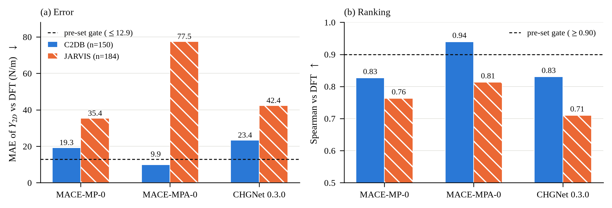
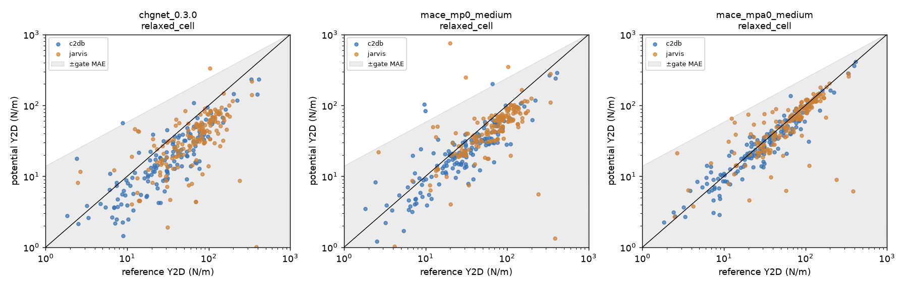
Dispersion is essential. Against 40 JARVIS-referenced monolayers (exfoliation energy converted to meV/Å2), MACE-MPA-0 with D3 has a median ratio to the reference of 1.09 [0.88, 1.27] in the van der Waals regime but fails the within-30 % (46 % vs 70 % needed) and failure-rate (16 % vs 10 %) criteria; without D3 the median ratio is 0.15 [0.09, 0.22], 46 % of structures fail, and D3 supplies a median 19 meV/Å2.
BiDB comparison (307 bilayers, 30 monolayers, D3 on). Binding-energy ranking, magnitude and stacking order pass; the interlayer gap fails (Table XI, Fig. 12). The potential over-binds by about 10 % (bias +1.6, MAE 3.6 meV/Å2); the worst gap cases are four C2H2 bilayers (BiDB gap about 2.0 Å, MACE about 4.1 Å). Pre-specified verdicts “binding energy and distance reproduced” and “stacking dependence reproduced” are therefore not satisfied, although S1 passes.
Bilayer stiffness. For 60 homobilayers the ratio of Eq. (17) has a median of 2.008 [1.95, 2.03] (51 strict cases: 2.009), IQR 1.92–2.07, 82 % within [1.8, 2.2] (Fig. 13). In this potential, at small strain, stiffness is thus consistent with additive layers. The variation across stackings of one monolayer is small (median |Rbest − Rworst| = 0.085, about 4 N/m), and R is only weakly related to binding energy (Spearman 0.14–0.18). Outliers are kept (SnSe 3.3–3.4; PbSe2 unstable). This is a ratio of two calculations by the same model, not a DFT validation, and a pilot at scale was not run because stacking-dependent variation of about 4 N/m could not be separated from model uncertainty without a second potential or DFT.
| Criterion | Requirement | Result | Verdict |
|---|---|---|---|
| D1 gap | median |Δd| ≤ 0.10 Å; p90 ≤ 0.30 Å | 0.175 [0.126, 0.275]; 0.479 [0.320, 0.565] | fail |
| E1 ranking | Spearman ≥ 0.80 | 0.903 [0.788, 0.950] | pass |
| E2 magnitude | median ratio 0.8–1.25; ≥70 % within ±30 %; ≥90 % within ×2 | 1.097 [1.037, 1.208]; 72.6 %; 98.4 % | pass |
| E3 failures | ≤ 10 % | 2 of 307 (0.7 %) | pass |
| S1 stacking | within-monolayer ρ ≥ 0.60; best in top 2 for ≥ 60 % | 0.749 [0.665, 0.847]; 70 % | pass |
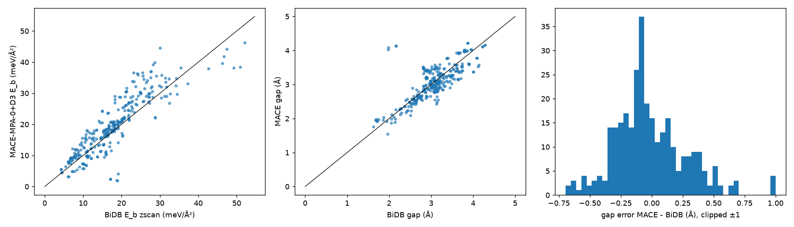
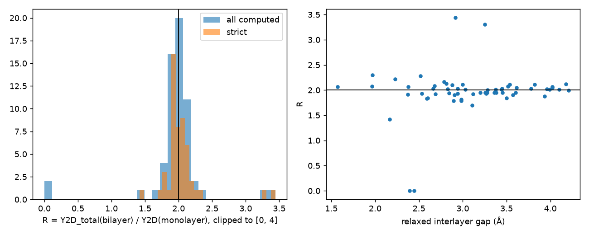
Our central finding is methodological: in these data, accuracy depends far more on what the test set shares with the training set than on the regressor. The two tree ensembles differ by about 1 N/m, a three-seed graph-network ensemble matches gradient boosting and nested tuning does not remove the family penalty, whereas changing the split changes the MAE of the same model by about 6 N/m for stiffness and by a factor 3.9–5.7 for bilayer binding energy. Reporting a random-split number alone would have hidden this. The model nevertheless retains real skill on unfamiliar families (MAE 19.9 vs 42.4 for the mean predictor) and ranks JARVIS materials reasonably, which is what a screening tool needs.
Three results deserve emphasis. First, chemical-system grouping alone would have missed the effect for stiffness (ratio 1.00), although it costs a small amount for several electronic properties. Second, the family penalty is present for every one of the 22 property–database pairs tested and above the 1.05 threshold for 19, but how large it is cannot be forecast from labels, and the failed P1 shows it is not uniformly large: the three JARVIS transport properties, which are poorly predicted under any split, barely lose accuracy, and chemistry matters more in JARVIS than in C2DB. Third, universal potentials are only partially trustworthy: the best monolayer result (MACE-MPA-0 on C2DB) does not carry over to JARVIS, dispersion is essential for interlayer binding, and the interlayer gap fails the criterion. Because the potentials were pretrained on large DFT collections of bulk crystals and some C2DB monolayers derive from layered bulk compounds, overlap between their training data and our benchmarks has not been assessed.
Not yet done: a mechanistic analysis of why prototype overlap, rather than chemistry, carries the leakage; datasets beyond 2D materials; a graph network for the BiDB targets; and, before any claim on bilayer stiffness, a DFT reference on a few bilayers (including SnSe and BaBr2), an independent second potential to test cancellation in the ratio of Eq. (17), an explanation of the gap error, and treatment of magnetic and metallic layers.
With 141 DFT-free descriptors, LightGBM predicts the 2D Young’s modulus of C2DB monolayers with an MAE of 13.8 N/m under random splitting but 19.9 N/m (1.44×) when structure families are held out; holding out chemical systems costs nothing. The family penalty is present for all 22 properties tested in two databases (above the materiality threshold for 19), survives a graph-network ensemble and tuning, and cannot be forecast from labels; for bilayer binding energies leakage at the monolayer level inflates random-split accuracy almost four-fold. On an independent database the model ranks materials well but is only roughly quantitative on new chemistry, and no universal potential yet qualifies as a stiffness-label generator. Family-grouped evaluation should therefore be the default for 2D-materials benchmarks, and bilayer stiffness remains an open, unvalidated question.
Raw databases are not redistributed; only derived statistics, figures and code are. Table XII lists each resource, its role and how it must be credited. Licence terms below were taken from the providers’ published statements as recalled at drafting time; they could not be re-checked from the drafting environment, so please confirm each entry on the provider’s site before submission.
| Resource | Role in this work | Provider / how to credit | Licence / terms (to be confirmed) |
|---|---|---|---|
| C2DB Computational 2D Materials Database | Training and cross-validation data; stiffness tensors (GPAW/PBE), structures, layer groups, panel properties. 8,462 stiffness records → 7,258 used; 16,905 entries for the panel. | CAMD, Technical University of Denmark. Cite Haastrup et al., 2D Mater. 5, 042002 (2018) [15] and Gjerding et al., 2D Mater. 8, 044002 (2021) [16]. https://c2db.fysik.dtu.dk/ | Open data; to our recollection released under Creative Commons Attribution 4.0 (CC BY 4.0), i.e. reuse with attribution. Confirm on the C2DB site. |
| JARVIS-DFT (2D subset) | External test, 10-property panel replication (1,103 monolayers) and potential references (never used to train the C2DB models); stiffness tensors, exfoliation energies and other properties (VASP/OptB88vdW). 229 tensors → 186 used. | NIST (Choudhary, Tavazza and co-workers). Cite Choudhary et al., npj Comput. Mater. 6, 173 (2020) [19] and Phys. Rev. B 98, 014107 (2018) [20]. https://jarvis-tools.readthedocs.io/ | Openly distributed by NIST (data via the JARVIS website / figshare; code under the NIST open-source licence). Attribution required; confirm the exact data licence on the JARVIS / figshare record. |
| BiDB bilayer database | Task B labels (binding energy, interlayer gap; 10,192 homobilayers of 992 monolayers) and interlayer validation of the potentials. | Cite Pakdel et al., Nat. Commun. 15, 932 (2024) [23]. https://2dhub.org/bidb/bidb.html | Licence not recorded in the project; obtain and state the terms from the BiDB site before submission. |
| Other links recorded | HetDB (2dhub.org) and arXiv:2004.03025 appear in the project’s link list. Not used in any reported experiment. | — | Not applicable (not used). |
mat-ml/results/) by paper/build/make_figures.py and paper/build/build.py.[Funding sources, supervisors, computing resources.] The authors thank the maintainers of C2DB, JARVIS-DFT and BiDB and of the open-source packages listed above.